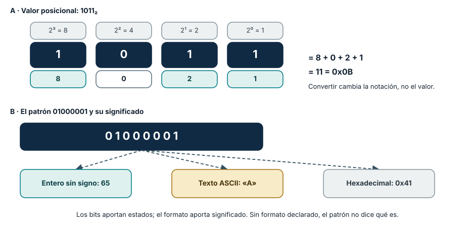
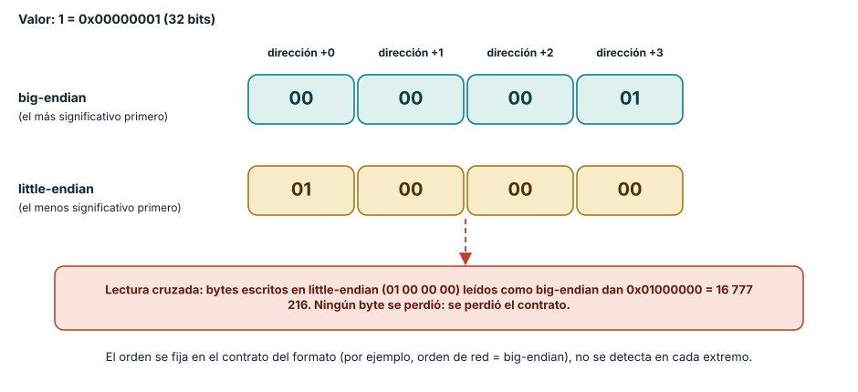
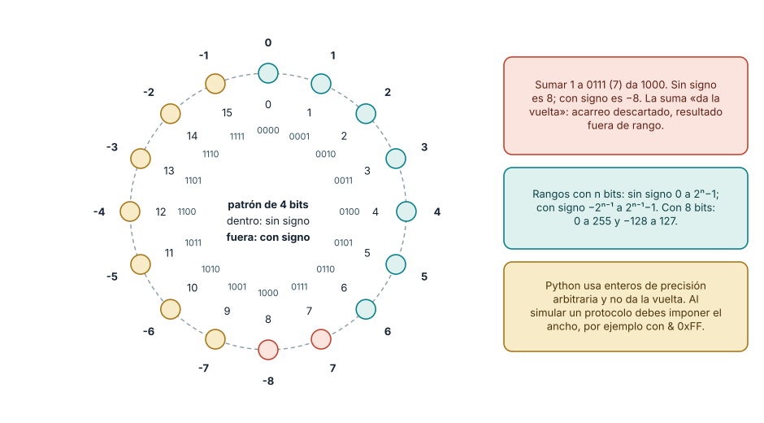

← SE-013 · ↑ Parte 01 · 📚 Índice completo · SE-015 →
Punto profesional y fundamento pedagógico
Punto profesional. La clase existe para interpretar un valor binario solo cuando se declaran base, ancho, signo y orden de bytes.
Por qué aparece aquí. Se sitúa después de Arquitectura básica de un computador moderno y antes de Texto, Unicode, codificaciones y mojibake: convierte el conocimiento anterior en una decisión observable que la clase siguiente podrá reutilizar. La continuidad se comprueba en el artefacto, no por compartir vocabulario.
Error conceptual que debe corregir. Creer que una secuencia de bytes posee signo y orden por sí misma.
Secuencia de aprendizaje. Antes de ejecutar código, escribe los dos bytes que esperas para 513 en big-endian y little-endian. Verifica ambos round trips, provoca un overflow de ancho fijo y explica por qué el error pertenece al contrato de representación. Cierra transfiriendo el procedimiento a un valor con signo.
Evidencia de aprendizaje. Representations.md con valor↔bits↔bytes, round trips y un desbordamiento explicado. Debe contener predicción previa, observación, explicación causal, contraejemplo, criterio de aceptación y una nota de qué dato haría cambiar la conclusión.
Límite de la conclusión. Los enteros de Python no reproducen un registro de ancho fijo sin imponerlo.
Trazabilidad fuente → afirmación
| Fuente primaria u oficial | Afirmación que respalda | Lo que no prueba |
|---|---|---|
| RISC-V ISA Introduction | declara el byte de ocho bits y variantes de ancho | No demuestra por sí sola que el artefacto del estudiante sea correcto. |
| Python integer methods | define serialización, orden y signo | No demuestra por sí sola que el artefacto del estudiante sea correcto. |
Python struct | documenta formatos binarios y byte order | No demuestra por sí sola que el artefacto del estudiante sea correcto. |
Antes de empezar
SE-013 localizó capas y contratos. Ahora abrimos el dato que las atraviesa. El byte 01000001 puede significar 65, A, una máscara o parte de una instrucción: los bits aportan estados; el formato aporta significado. Prepararás la serialización numérica de el analizador local de eventos para que SE-015 pueda explicar texto sin confundirlo con bytes.
Prerrequisitos
Mapa de capas de SE-013, suma y potencias enteras básicas, Python 3.11+.
Problema auténtico
Dos servicios intercambian cuatro bytes. Uno lee 1; el otro, 16777216. Ambos conservan los mismos bits, pero asumieron distinto orden. Sin contrato de representación, “los datos llegaron intactos” no significa que conservaron significado.
Objetivos observables
Convertirás entre bases usando valor posicional; explicarás rango y signo; serializarás enteros con orden explícito; y diagnosticarás overflow o endianess sin probar valores al azar.
Temas y por qué importan
| Tema | Mecanismo | Por qué importa |
|---|---|---|
| Bit y byte | agrupan estados discretos | son unidad de contratos binarios |
| Base posicional | pesos por potencia | permite leer y verificar representaciones |
| Signo y rango | reserva patrones para valores | explica overflow e interoperabilidad |
| Endianess | ordena bytes de valores multibyte | evita decodificaciones incompatibles |
Mapa conceptual
Ver la notación fuente del diagrama
flowchart LR
V[Valor 513] --> B[Binario 00000010 00000001]
B --> BE[Bytes big-endian 02 01]
B --> LE[Bytes little-endian 01 02]
BE --> V
LE --> VEl valor es el mismo solo cuando el lector conoce ancho, signo y orden. El mapa no aplica a texto hasta que SE-015 defina una codificación.
Conceptos y decisiones
1. Un bit distingue estados; el contexto les da significado
Un bit modela dos estados, usualmente escritos 0 y 1. Ocho bits forman un byte en las plataformas estudiadas. Con n bits existen 2**n patrones. Eso no decide qué representan: el mismo patrón puede interpretarse como entero, flags o fragmento de un formato.
2. La notación posicional conserva valor entre bases
En base b, cada dígito pesa una potencia de b. 1011₂ vale 1×2³ + 0×2² + 1×2¹ + 1×2⁰ = 11. Hexadecimal agrupa cuatro bits por dígito y facilita inspección: 0x0B expresa el mismo valor. Convertir no cambia el valor; cambia la notación. Verifica reconstruyendo la suma, no mediante memoria visual.

Cómo leer la figura. En la parte A, cada bit multiplica el peso de su posición y la suma reconstruye el valor; el hexadecimal agrupa de cuatro en cuatro bits, de modo que 0000 1011 es 0x0B. En la parte B, el *mismo* patrón se lee de tres maneras según el formato que se declare. La conversión entre bases es mecánica; lo que no es mecánico es saber qué formato aplica. Dónde deja de valer: el valor posicional describe enteros no negativos. Los negativos, las fracciones y el texto necesitan reglas adicionales (secciones siguientes y SE-015, SE-016), y el patrón de la parte B es ASCII solo si el contrato dice que es texto.
3. Ancho y signo determinan el rango
Un entero sin signo de n bits cubre 0 a 2n - 1. Complemento a dos usa el bit más significativo como parte de una representación cuyo rango es -2(n-1) a 2**(n-1)-1. La suma modular descarta acarreo fuera del ancho. Python usa enteros de precisión arbitraria, por lo que debes imponer el ancho cuando simulas un protocolo.
4. Endianess ordena bytes, no bits dentro de una explicación informal
Un valor multibyte puede serializarse con el byte más significativo primero (big-endian) o al final (little-endian). El contrato debe fijarlo. Cambiar el orden de visualización de bits dentro de cada byte introduce otra cuestión y no debe mezclarse. int.to_bytes y int.from_bytes exigen declarar orden y signo.

Cómo leer la figura. Las dos filas guardan *el mismo valor* en las mismas cuatro direcciones; solo cambia cuál byte va primero. La flecha roja muestra el error del problema auténtico: bytes escritos en un orden y leídos en el contrario no se corrompen, pero significan otra cosa. struct.pack('<I', 1) produce 01000000 y struct.pack('>I', 1) produce 00000001. Dónde deja de valer: el diagrama trata los bytes como indivisibles. Dentro de un byte el orden de los bits es otra cuestión que casi nunca importa en software, pero sí en ciertos buses y protocolos serie; no mezcles ambas preguntas.
5. Tamaño, unidad y prefijo también son contratos
Un byte no es un carácter. KB y KiB pueden representar bases distintas según el estándar y producto. Un identificador de 32 bits no tiene el mismo rango que una cantidad de 32 bytes. Escribe unidad, ancho y representación cerca del dato.
6. Complemento a dos: por qué existe y cómo se calcula
Representar números negativos con bits exige una regla. La más usada es el *complemento a dos*, porque permite que la misma circuitería sume y reste números con y sin signo. Para negar un valor se invierten todos sus bits y se suma uno. En ocho bits, 5 es 00000101; invertido es 11111010; sumando uno resulta 11111011, que es 0xFB, y (-5).to_bytes(1, 'big', signed=True) devuelve exactamente fb. Otra forma de leerlo: el bit más significativo pesa -2ⁿ⁻¹ en lugar de +2ⁿ⁻¹, de modo que 11111011 vale -128 + 64 + 32 + 16 + 8 + 2 + 1 = -5.
Esta regla hace que sumar *da la vuelta*. En ocho bits, 127 + 1 produce 10000000, que con signo es -128: el acarreo que sale del byte se descarta y el resultado cae fuera del rango. La Figura 3 lo muestra con cuatro bits, donde la vuelta es visible en un círculo. Python no muestra este comportamiento porque sus enteros no tienen ancho; para simularlo se impone una máscara. La expresión ((n & 0xFF) ^ 0x80) - 0x80 interpreta los ocho bajos de n como un byte con signo: aplicada a 128 da -128, y a 255 da -1, tal como int.from_bytes(b'\xff', 'big', signed=True). El mismo 0xff vale 255 sin signo y -1 con signo; el patrón no decide.

Cómo leer la figura. Cada punto es un patrón de cuatro bits. El número interior es su lectura sin signo y el exterior, con signo. Avanzar una posición suma uno; al pasar de 0111 a 1000 el valor con signo salta de 7 a -8. Los puntos rojos marcan esa frontera. Dónde deja de valer: el anillo explica la aritmética modular de un ancho fijo. Los lenguajes difieren en qué hacen ante el desbordamiento con signo (envolver, saturar, lanzar un error o declararlo comportamiento indefinido), de modo que el hecho de que el hardware dé la vuelta no autoriza a depender de ello en el código.
7. Máscaras y desplazamientos: banderas sin ambigüedad
Muchos formatos empaquetan varias decisiones en un campo: permisos, estados, opciones. Las operaciones bit a bit permiten leerlas y modificarlas sin tocar el resto. & conserva los bits presentes en ambos operandos (útil para *probar* o *borrar* con una máscara), | combina (*activar*), ^ invierte los bits indicados, ~ invierte todos y <<, >> desplazan. Con 0b1010 y 0b0110: & da 0b0010 (2), | da 0b1110 (14), ^ da 0b1100 (12), ~0b1010 & 0xF da 0b0101 (5), 1 << 3 da 8 y 0b1000 >> 2 da 2.
Los permisos de archivos Unix usan esta idea: lectura, escritura y ejecución valen 4, 2 y 1, y r|w es 6 mientras r|w|x es 7. El modo 0o755 combina tres grupos (propietario, grupo, otros) y la máscara umask de 0o022 indica qué bits *quitar*: 0o777 & ~0o022 es 0o755. Para evitar errores, define las máscaras como constantes con nombre, prueba un bit con valor & MASCARA, y no mezcles banderas con valores numéricos: un campo de banderas no admite orden ni suma.
8. Contadores que dan la vuelta: comparar números de secuencia
Un campo de dos bytes, como el sequence=513 del caso conductor, llega a 65 535 y vuelve a 0. Comparar con < falla en la vuelta: si el último número recibido fue 65 535 y llega 1, el número 1 es *posterior* (dos pasos después) pero 1 < 65535 es verdadero. La aritmética de números de secuencia, descrita en el RFC 1982 y usada por TCP y DNS, compara por *distancia circular*: el número b es posterior a a si (b - a) & 0xFFFF es positivo y menor que 0x8000. Con a = 65535 y b = 1, (b - a) & 0xFFFF es 2, de modo que b es posterior; la comparación ingenua daba lo contrario. La regla tiene un límite: solo es válida si dos números comparables nunca están más lejos que la mitad del rango, algo que el diseño del protocolo debe garantizar (por ejemplo, con ventanas de tamaño acotado).
Caso conductor: longitud binaria del analizador local de eventos
El analizador local de eventos agrega un campo sequence=513. Se decide serializarlo en dos bytes sin signo y big-endian: 02 01. El lector valida exactamente dos bytes. Si el dominio puede superar 65535, el contrato debe ampliar ancho o rechazar; truncar silenciosamente cambia la identidad.
Definiciones de trabajo
- bit: unidad con dos estados distinguibles;
- byte: grupo de ocho bits en este programa;
- base: cantidad de dígitos y pesos de una notación posicional;
- overflow: resultado fuera del rango representable;
- endianess: orden de bytes en un valor multibyte.
Glosario
MSB/LSB señalan bit o byte más/menos significativo según contexto. Nibble son cuatro bits. Máscara selecciona posiciones mediante operaciones bit a bit.
Ejemplo mínimo
255 cabe en un byte sin signo (ff) y no en un byte con signo. (-1).to_bytes(1, 'big', signed=True) produce ff; leerlo como no firmado devuelve 255.
Ejemplo profesional
Un encabezado de red fija ancho y orden. El productor que usa orden nativo puede pasar pruebas locales y fallar al interoperar. La solución es contrato explícito y vectores de prueba compartidos, no detectar plataforma en cada extremo.
Práctica guiada
Usa como base el laboratorio ejecutable de la Parte 01; trabaja sobre una copia o conserva tus salidas en el directorio work/SE-014/.
- Crea
representations.pycon funciones que muestren decimal, binario y hexadecimal. - Convierte manualmente 13, 255 y 513 y verifica con
format. - Serializa 513 en dos bytes, ambos órdenes, y registra
hex(). - Lee cada secuencia con el orden contrario y explica el valor resultante.
- Prueba fronteras 0, 65535, -1 y 65536 con signo declarado.
- Entrega
conversion-table.md,representations.pyyobservations.md.
Ejercicios
- Demuestra por qué
0xffno determina por sí solo -1 o 255. - Diseña un campo de flags y dos máscaras.
- Propón una migración de 16 a 32 bits compatible con lectores antiguos.
Reto verificable
Otra persona recibe cinco secuencias y tu contrato. Debe recuperar valores y rechazar las inválidas sin preguntarte ancho, signo u orden.
Preguntas frecuentes
¿Hexadecimal ocupa menos memoria?
No necesariamente; es una notación textual compacta para humanos.
¿El orden nativo es más rápido?
Puede evitar conversiones locales, pero la interoperabilidad requiere un contrato estable.
¿Por qué los protocolos de red usan big-endian?
Por convención histórica: el «orden de red» es big-endian, y las funciones como htons y htonl existen para convertir desde el orden local. Hoy muchos formatos modernos usan little-endian porque los procesadores más comunes lo usan de forma nativa. Lo importante no es cuál es mejor sino que el formato lo declare y lo pruebe con vectores.
¿El complemento a dos es la única forma de representar negativos?
No. Existieron otras, como el complemento a uno y signo-magnitud, que complican la aritmética (dos ceros, por ejemplo). Casi todos los procesadores actuales usan complemento a dos para enteros; los formatos de coma flotante usan signo-magnitud con un bit de signo independiente, tema de SE-016.
¿Cuántos bits necesito para un identificador?
Los que cubran el máximo de valores distintos que existirán durante la vida del sistema, con margen. Con n bits hay 2ⁿ valores: 16 bits cubren 65 536 y 32 bits cubren unos 4 300 millones. Un contador de eventos por segundo puede agotar 32 bits en años; calcúlalo con la tasa esperada en vez de elegir el ancho por costumbre.
Fallo controlado y diagnóstico
Codifica 513 como big-endian y léelo como little-endian. Conserva bytes, valor erróneo, hipótesis y corrección. No “arregles” invirtiendo hasta que funcione: fija el contrato.
Un segundo fallo controlado explora el desbordamiento. Serializa en dos bytes sin signo el valor 65 535 y luego 65 536: int.to_bytes lanza OverflowError: int too big to convert, lo que convierte el error en visible. Ahora repite con la máscara & 0xFFFF: el valor 65 536 se transforma en 0 sin avisar. Síntoma: un identificador se repite tras 65 536 eventos y dos registros distintos colisionan. Causa: se eligió truncar en silencio en lugar de rechazar o ampliar el ancho. Corrección: el contrato define qué hacer fuera de rango (rechazar, ampliar a cuatro bytes con una versión de formato o usar aritmética de secuencia) y los vectores de prueba incluyen 0, 65 535, 65 536 y -1.
Errores comunes y cómo corregirlos
| Síntoma | Causa | Corrección |
|---|---|---|
| conversión aprendida de memoria | falta modelo posicional | reconstruye pesos y suma |
| overflow no aparece en Python | entero arbitrario oculta ancho | valida rango o usa serialización fija |
| “un byte es un carácter” | capas mezcladas | define codificación en SE-015 |
| bytes invertidos entre sistemas | endianess implícito | fija orden y vector de prueba |
Entorno y archivos clave
Python 3.11+, sin dependencias: representations.py, conversion-table.md, observations.md. Limpieza: elimina el directorio de práctica.
Seguridad, ética y accesibilidad
Usa valores sintéticos. Presenta binario agrupado y con equivalente decimal para lectores con distintas necesidades. No confíes en overflow para validación de seguridad.
Puente hacia el trabajo con agentes
Un asistente de IA genera funciones de serialización con fluidez, y los errores que introduce son los de esta clase: orden de bytes implícito, ancho no declarado, & 0xFF que trunca en silencio. Convierte cada sección en un criterio de aceptación de la tarea: el contrato fija ancho, signo y orden; los vectores de prueba incluyen fronteras (0, máximo, máximo + 1, -1); y una revisión humana comprueba que el código *rechaza* lo inválido en lugar de truncarlo. También conviene pedirle al agente que genere los vectores desde la especificación y no desde su propia implementación, porque una prueba derivada del código reproduce sus errores. Las partes sobre especificación y evaluación del trabajo agentic desarrollan ese criterio.
Transferencia
Inspecciona un color RGB o un encabezado documentado y separa patrón, formato y significado.
Evaluación y evidencia
Se evalúan conversiones justificadas, contrato completo, fronteras y diagnóstico reproducible.
Fuentes
- RISC-V ISA Introduction declara el byte de ocho bits y variantes de ancho.
- Python integer methods define serialización, orden y signo.
- Python
structdocumenta formatos binarios y byte order. - RFC 1982, Serial Number Arithmetic: define la comparación circular de números de secuencia usada en la sección 8.
- Randal E. Bryant y David R. O'Hallaron, *Computer Systems: A Programmer's Perspective*, 3.ª edición (Pearson, ISBN 978-0-13-409266-9), capítulo 2: representación de enteros, complemento a dos y desbordamiento.
Límites y siguiente paso
No cubre álgebra booleana ni formatos de archivo completos. SE-015 asigna texto a secuencias de bytes.